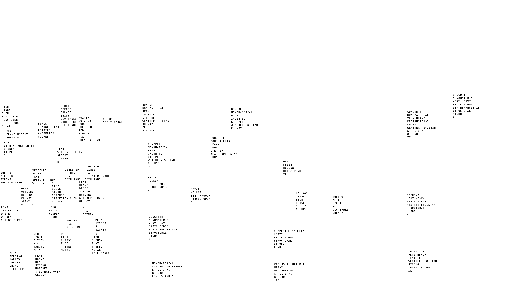

style="top: 950px; left: 50px; width: 100px; height: auto;" onclick="fadeToScene('hotel-caretaker-slides.html')">
style="top: 950px; left: 1750px; width: 100px; height: auto;" onclick="fadeToScene('character.html')">
